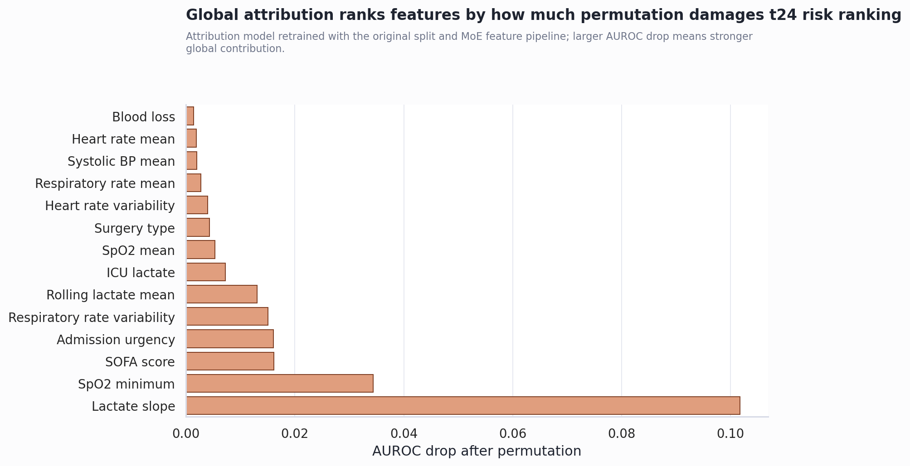
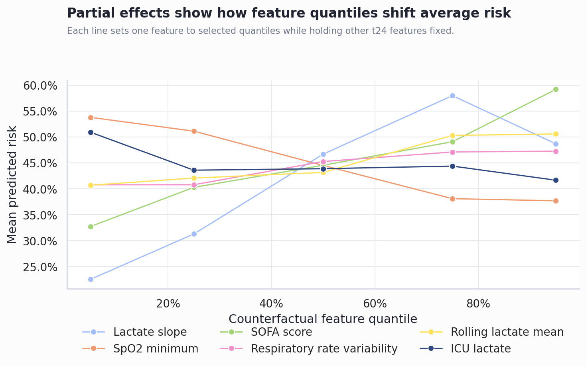
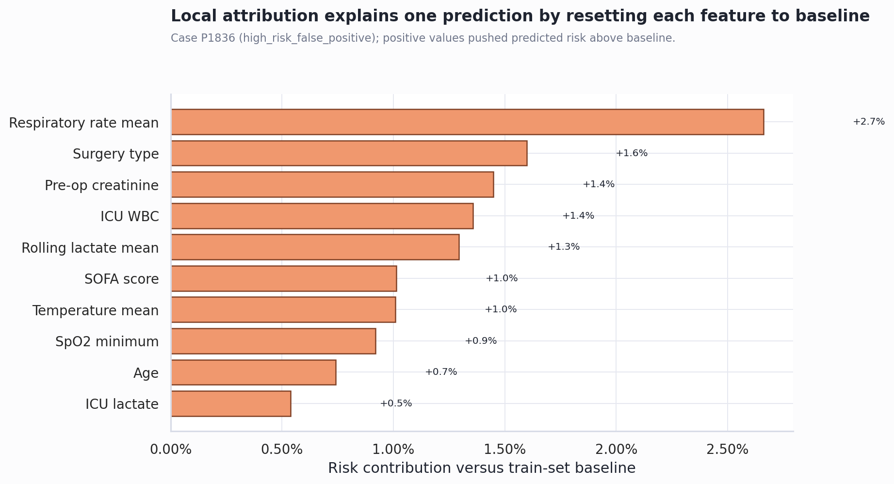
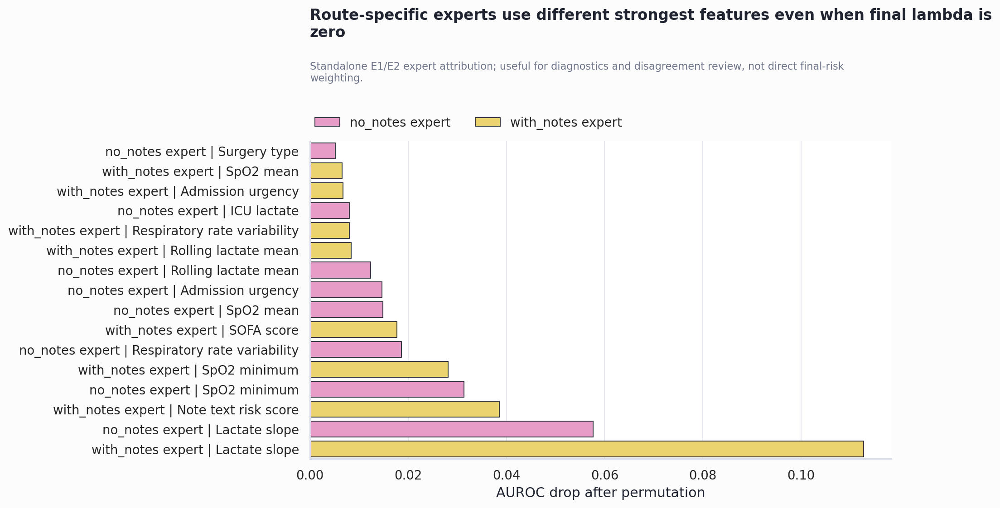

Data-Availability MoE Feature Attribution
生成日期：2026-06-10。目标：解释 t24 MoE 风险预测到底被哪些指标推动，以及指标变动方向如何改变预测风险。
技术结论
- 可以做 feature attribution。本报告实现了 global permutation attribution、partial-effect direction 和 local counterfactual attribution。
- 当前最终风险优先解释 E0。原始 artifacts 的 validation 权重是
lambda_with=0.000、lambda_no=0.000；当前 attribution refit 得到lambda_with=0.0、lambda_no=0.0。因此 E1/E2 更适合作为 route-specific diagnostics，而不是声称它们主导最终风险。 - 当前 attribution refit 的 t24 表现：AUROC=0.868，AUPRC=0.829，Brier=0.145，threshold=0.4870。
- 最大 global attribution 特征：Lactate slope，permutation 后 AUROC 平均下降 0.102，Brier 平均增加 0.046。
Feature Attribution 结果
Global attribution：打乱重要特征会明显损害风险排序
Permutation importance 的读法是：只打乱一个特征，其他特征保持不变，然后观察 AUROC/Brier 变差多少。它回答的是“模型全局上依赖哪些指标做 t24 风险排序”。这里最重要的特征是 Lactate slope。

Feature direction：指标值变化会改变平均预测风险
Partial-effect 曲线把一个指标设置到不同分位点，同时保持其他 t24 特征不变。曲线向上表示该指标升高会把平均预测风险推高；曲线向下表示该指标升高会压低平均预测风险。这个图比单纯排序更接近你说的“根据指标变化然后预测”。

Local attribution：单个病人的风险由哪些指标推高或压低
Local counterfactual attribution 的读法是：对一个病人，把某个指标替换成 train-set baseline，再看风险下降或上升多少。正值表示该病人的实际指标值相对 baseline 把风险推高；负值表示压低风险。示例病例 P1836 的最大局部贡献来自 Respiratory rate mean，贡献 +2.7%。

Route-specific attribution：E1/E2 可解释专家差异，但不是最终风险主权重
因为最终融合权重为 0，E1/E2 的 attribution 不能直接解释 final risk；但它们仍能解释 route-specific expert 为什么和 E0 意见不同。这个信息适合用于 high-disagreement review、notes ablation 和 MNAR 分析。

范围、数据和定义
分析使用 data/raw/icu_patients.csv，按原脚本的 stratified 60/20/20 split 和 seed=42 重建 train/validation/test。归因对象是 t24 calibrated risk，不是完整跨阶段 belief_risk。原因是 feature attribution 要解释“某个 t24 指标改变如何影响当前风险输出”；belief update 还混入 t0/t6/t12 历史状态和 uncertainty smoothing。
| Attribution output | Meaning |
|---|---|
| Permutation importance | 全局重要性：打乱该指标后 AUROC 下降和 Brier 上升。 |
| Partial effect | 方向性：把该指标设为不同分位点时，平均预测风险如何变化。 |
| Local counterfactual | 单病人解释：把该病人的指标替换为 baseline 后，风险变化多少。 |
方法
最终风险的 feature attribution 使用下面的定义：
global_importance(feature) = baseline_AUROC - AUROC(model(x with feature permuted)) local_contribution(patient, feature) = risk(patient observed features) - risk(patient with feature set to train baseline)
这个方法不是 SHAP，但属于清晰可复现的 feature attribution。它直接回答“模型是否依赖这个指标”和“该指标相对 baseline 把某个病人的风险推高还是压低”。如果需要严格 SHAP，需要恢复原 LightGBM joblib 的运行环境或重新保存一个当前环境可加载的 LightGBM/TreeExplainer 版本。
限制和 caveat
- 不是旧 joblib 的严格树归因：The saved LightGBM model.joblib cannot be safely unpickled in the current environment, so attribution is computed from a same-split, same-feature-pipeline MoE refit.
- final risk 与 route expert 分开解释：final risk 当前主要解释 E0；E1/E2 attribution 只能作为 route-specific diagnostics。
- Permutation 是相关性敏感的：如果两个指标高度相关，打乱其中一个可能低估或高估真实依赖。
- Counterfactual baseline 不是临床干预：把 lactate 设为 median 只是解释模型，不表示真实治疗能产生同样风险变化。
建议下一步
- 答辩时用图 1 说明“模型主要看哪些指标”，用图 2 说明“指标变动方向”，用图 3 说明“单个病人怎么解释”。
- 如果要提交更强版本，恢复原 LightGBM 环境后补 SHAP beeswarm 和 3 个 patient-level waterfall。
- 把 local counterfactual 表接到 demo UI：输入 patient_id，显示 top positive/negative contributors。
仍需回答的问题
- 临床评委是否要求严格 SHAP，还是 permutation/counterfactual attribution 已足够？
- 是否要把 attribution 从 t24 扩展到 t0/t6/t12，解释早期预警阶段？
- 是否要为 false negatives 单独输出 attribution，用于 failure catalogue？